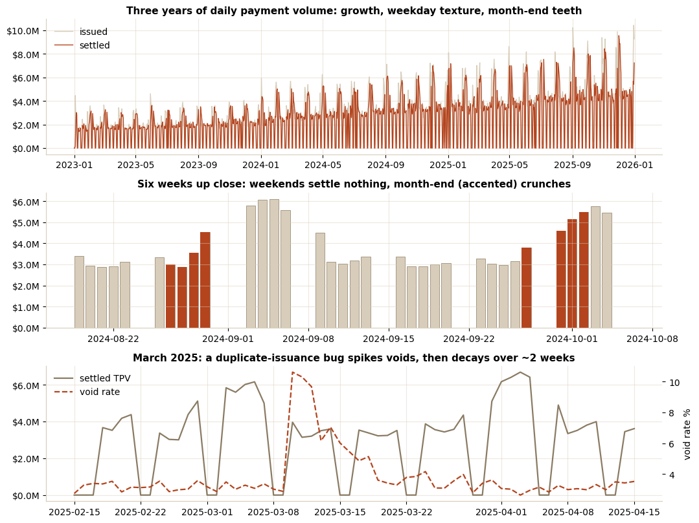
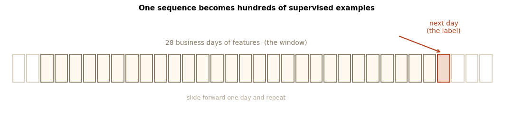
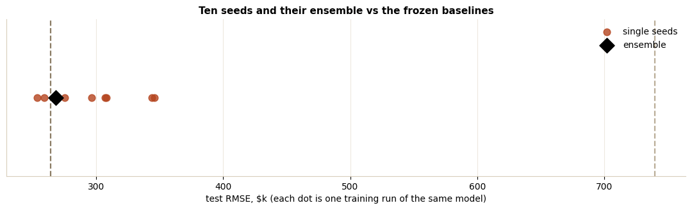
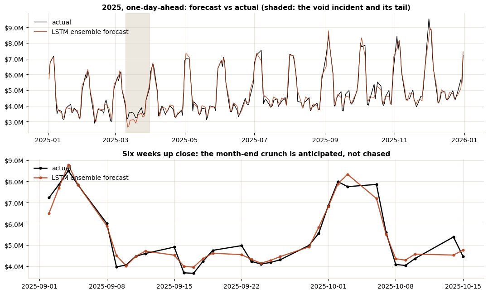

Case study · Notebook
Forecasting daily settled TPV with an LSTM
Treasury sizes funding lines against tomorrow's settled TPV (total payment volume); operations staffs against it; finance paces the month with same-weekday-last-week heuristics. This study builds an LSTM forecaster by the book, evaluates it the way the book demands, and reports the verdict most deep-learning write-ups bury: the sequence model ties a linear baseline on identical inputs. Both cut the desk heuristic's error by two thirds. The cheaper model ships; the harness stays warm.
The notebook
The analysis, step by step
Step 1: know the series before modeling it
Three years of daily payment operations: issued volume net of voids settles over the next one to three business days, on a weekday funding rhythm, with a month-end crunch of AP (accounts payable) runs, holiday dips, compounding growth, and one operational incident, a duplicate-issuance bug in March 2025 that spikes the void rate and decays over two weeks. Settlement only happens on business days, so the model works on the business-day series: forecasting a Saturday zero is not skill.

Step 2: sequence prediction as supervised learning
The book's data-preparation recipe: each example is the last 28 business days of features (settled TPV, issued volume, void rate, day-of-week encoded on a circle, month-end and post-holiday flags); the label is the next day's settled TPV. Scaling is fit on training rows only, the split is chronological (train 2023 through 2024-09, validate 2024-Q4, test all of 2025), and the tensor is the `[samples, timesteps, features]` shape Keras expects, printed rather than assumed.

Step 3: the honesty gate, then the lifecycle
Four baselines come first: persistence, seasonal naive, a moving average, and a linear regression on the flattened window, the fairest fight, since it sees identical information without recurrence. Then the book's lifecycle: define (48 LSTM units, one Dense output), compile (mean squared error, Adam), fit (early stopping on a 2024-Q4 validation slice, learning-rate reduction on plateau), diagnose via train/validation loss curves, and compare vanilla against a stacked variant, which loses, as depth on 400 training windows usually does.
the whole model: define, compile, fit
model = keras.Sequential([
keras.Input(shape=(28, 7)), # [timesteps, features]
layers.LSTM(48), # 4 x 48 x (7+48+1) = 10,752 params: the gates
layers.Dense(1),
])
model.compile(loss='mse', optimizer=keras.optimizers.Adam(1e-3))
model.fit(X_train, y_train, validation_data=(X_val, y_val),
epochs=200, batch_size=32,
callbacks=[EarlyStopping(patience=25, restore_best_weights=True),
ReduceLROnPlateau(factor=0.5, patience=10)])
| Model | RMSE (held-out 2025) | MAPE |
|---|---|---|
| seasonal naive (the desk rule) | $2,023k | 30.4% |
| persistence | $740k | 11.0% |
| linear regression, same window | $264k | 4.4% |
| vanilla LSTM (48) | $259k | 4.1% |
| LSTM 10-seed ensemble | $268k | 4.4% |
Step 4: one run is not evidence
Neural networks are stochastic, so the book prescribes repeated evaluation. Ten refits varying only the seed: RMSE runs $254k to $346k, two of ten beat the linear baseline, and averaging the ten predictions (the ensemble that would actually ship) lands at $268k against linear's $264k. That is a tie, and calling it anything else is marketing. The ship decision follows from the tie: production gets the linear model, the LSTM harness stays warm, and the switch criteria are explicit: multi-day horizons, intraday grain, or interacting series, the settings where a linear window model compounds its errors.

Step 5: test the stories, then brief the users
Two claims got tested instead of asserted. The void-rate feature, narratively the "incident detector", ablated to nothing: removing it changed incident-window error by -4%, because the damage already arrives through issuance and settlement volume. And the update experiment (refit scalers and model through June 2025, compare on H2) showed a frozen model holds up within the year, so refit cadence is a monitoring decision, not a decay emergency. The forecast itself: 4.1% MAPE across a full held-out year, month-end crunches anticipated rather than chased, and March, the incident month, priced as the cost of operating on end-of-day files.

Source & data. The executed notebook (Keras 3 on JAX, ~1 minute to retrain from scratch) and the synthetic dataset (weekday funding, month-end crunch, load-dependent settlement lag, the decaying void incident, all injected deterministically and documented in the generator) are on GitHub: notebooks/tpv_lstm_forecasting. The same program's economics: virtual card CLV and merchant retention.